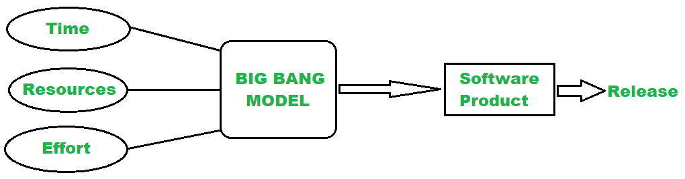

Big Bang mudel on väga lihtne ja mitteametlik tarkvaraarenduse lähenemine, kus arendusprotsessile ei järgita kindlat struktuuri ega etappe. Tavaliselt algab projekt üldise ideega, mille põhjal kohe alustatakse arendust ilma põhjaliku planeerimiseta. Kogu ressursid – aeg, raha ja tööjõud – suunatakse kiiresti arendusse, lootes, et lõpptulemuseks valmib toimiv süsteem. Seda mudelit iseloomustab suur risk, kuna puudub dokumenteeritud analüüs ja testimine ning projekt võib lõppeda ebaõnnestumisega, kui lõpp-produkt ei vasta kasutaja ootustele või on ebastabiilne. Big Bang mudelit kasutatakse harva professionaalses arenduses, kuid seda võib kohata väiksemates või eksperimentaalsetes projektides, kus on vaja kiiresti tulemust näha.
| Positiivsed küljed | Negatiivsed küljed |
|---|---|
| Selleks pole planeerimist vaja. | Ei sobi suurte projektide jaoks. |
| Sobib väikeste projektide jaoks | Väga riskantne mudel ja ebakindel |
| Vaja on väga vähe ressursse. | Kui nõuded pole selged, võib see olla kulukas |
| Kuna puudub korralik planeerimine, ei vaja see juhtkonda | Kehv mudel käimasolevate projektide jaoks |